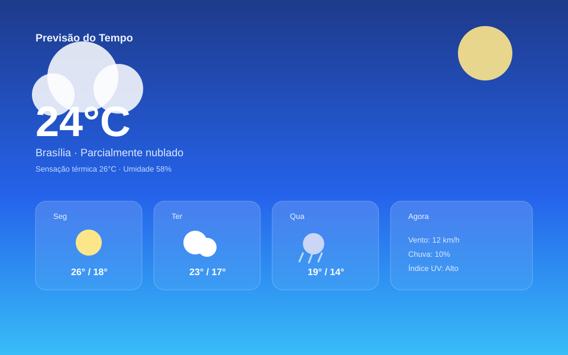

Projeto no GitHub
Previsão do Tempo
Aplicação web que consulta uma API pública de meteorologia e exibe a temperatura atual, condição do tempo e a previsão dos próximos dias.

Sobre o projeto
O projeto simula um painel de clima: o usuário pesquisa uma cidade e a aplicação retorna temperatura, sensação térmica, umidade e a previsão para os próximos dias, com ícones dinâmicos de acordo com a condição climática.
O que foi praticado
Consumo de API externa com fetch/JavaScript assíncrono, tratamento de estados de carregamento e erro, e apresentação dos dados em cards responsivos.